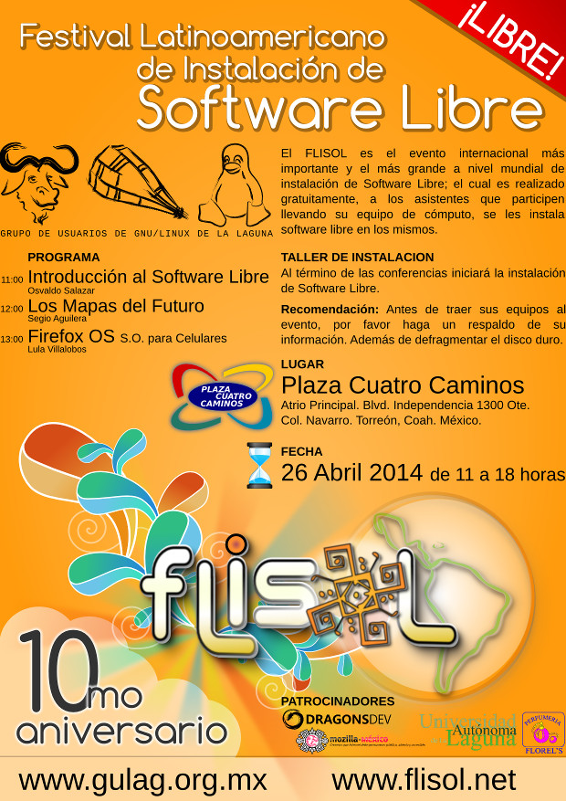

Publicaciones escritas por GULAG
FLISOL 2014
Sábado 26 de Abril de 2014 - GULAG

Con el objetivo de promover y difundir el uso de Software Libre, el próximo sábado 26 de Abril de 2014 se llevará a cabo el Festival Latinoamericano de Instalación de Software Libre en Plaza Cuatro Caminos, atrio principal, en Torreón, Coahuila, México.
El Festival Latinoamericano de Instalación de Software Libre (FLISOL) es el evento internacional más importante y el más grande a nivel mundial de instalación de Software Libre; el cual es realizado gratuitamente, a los asistentes que participen llevando su equipo de cómputo, se les instala software libre en los mismos. El evento FLISOL lo ha venido realizando GULAG desde el año de 2006 ininterrumpidamente con el apoyo de diversos patrocinadores. El festival ha tomado tanta relevancia a nivel internacional que en ciudades de países NO latinoamericanos como Portugal, Estados Unidos y Canadá se han unido a su realización.
Distribuciones ofrecidas:
- Debian (recomendado)
- Guadalinex
- Manjaro
- Mint
- Opensuse
- Trisquel
- Ubuntu
Fecha Lugar y hora
- Lugar: Plaza Cuatro Caminos, Atrio principal. Blvd. Independencia #1300 Ote, Col. Navarro Torreón, Coahuila, México.
- Horario: De las 11:00 hasta las 18 horas.
Actividades
- Charlas
- Muestra de Software Libre
- Festival de instalación
- Contacto con la comunidad de Software Libre local.
ATENCIÓN
Se recomienda que antes de asistir al evento haga un RESPALDO DE LA INFORMACIÓN IMPORTANTE y defragmentar el disco duro.
Programa
- 11:00 Bienvenida
- 11:10 AM “El Software Libre y su cultura” por Osvaldo Salazar (ChicoXXX)
- 12:00 PM Los Mapas del Futuro por Sergio Aguilera
- 12:45 PM Firefox OS por Lula Villalobos
- 2:00 PM a 6:00 PM Installfest: Instalación de software libre en las computadoras que lleven los asistentes.
Evento dirigido a todo tipo de público: estudiantes, académicos, empresarios, trabajadores, funcionarios públicos, entusiastas y aun personas que no poseen mucho conocimiento informático.
Descargas
Gulag aprendiendo a usar GitHub
2014-02-08 18:12 - GULAG
En la junta de hoy se impartió un taller sobre GitHub y el CMS de Movimiento libre, además tuvimos la presencia de la comunidad de Python Laguna.
La gente de Python Laguna extendió la invitación a todos los interesados en formar parte de esta nueva comunidad que nace en la región: Python Laguna es una comunidad de amantes y entusiastas del lenguaje Python que buscan extender y popularizar su uso, si buscas pertenecer a este grupo no dudes en visitar su página.
Por otra parte, Sergio Aguilera nos Impartió un mini taller donde se enseñó a la comunidad, como actualizar la página de la GULAG desde github.
Este taller tomo aspectos importantes en la maquetación del contenido como lo es, la estructura de los archivos y una guía de inicio rápido para Markdown el maquetador de contenidos usado para la página.
Se habló del motor principal de nuestro sitio, el CMS de movimiento libre, un manejador de contenidos nacido en la laguna con un potencial enorme, codificado en ruby, otorga muchas facilidades a la hora de crear sitios web.

Primera reunion del año- Enero 2014
2014-01-20 12:00 - GULAG

El pasado sábado 18 de enero del 2014 se llevo acabo la primera junta del año, en la cual se acordaron diversos puntos, que fueron expuestos con anterioridad en la posada del grupo.
-
Las juntas mensuales se dividirán en 2 secciones, de 4:00pm a 5:00pm, se darán pláticas a los nuevos integrantes del grupo, y de 5:00pm en adelante, se darán pláticas de nivel Intermedio-Avanzado.
-
De inicio, Sergio Aguilera,dará las pláticas a los nuevos integrantes, sin embargo, se extiende a cualquiera que quiera dar una plática para los nuevos integrantes.
-
La revista está empezando a ser maquillada por Osvaldo Salazar (ChicoXXX), de igual manera, todo el que quiera publicar un artículo en la misma, favor de contactarlo.
-
Debido a la falta de foro, no se trató el tema de suspender las flisol, sin embargo, se tomó la decisión que el flisol de este año si se llevara a cabo, independientemente de que el próximo año dicho evento sea suspendido.
Sergio Aguilera, hablo sobre GitHub mostrando las bondades que ha incorporado este año y como han impactado de manera significativa a el software libre, junto a ello, anuncío que la pagina de la GULAG, actualmente se encuentra Hospedada en Github, gracias a las bondades de GitHub Pages.
Gracias a este nuevo hosting, ahora la actualización de la pagina se ve desentralizada, es decir, ahora cualquier usuario de la GULAG podra subir una entrada a el sitio.
Guillermo Valdes nos acompaño con un taller introductorio a git, una herramienta por demas necesara en todo desarrollo, en especial, en aquellos que usan GitHub como manejador de versiones.
Se a creado un respositorio en GitHub donde se subiran mensualmente el recopilatorio de las imagenes tomadas en cada junta, para acceder a el, favor de hacer click aqui.
El proximo mes, se llevara acabo la primera parte de un taller sobre creación y actualización de blogs y sitios web mediante GitHub Pages y el CMS de Movimiento Libre, impartido por Sergio Aguilera.
Requisitos Maquina con GNU/LINUX
Junta Ordinaria 4-Noviembre-2013
2013-11-04 12:00 - GULAG
EL pasado día sábado 4 de noviembre se contó con la participación de estudiantes de la UAC quienes solicitarón una platica sobre la Deep Web, impatida por Sergio Aguilera.
Despues de la ronda de preguntas y respuestas ya acostumbradas, nuestro compañero Alejandro Esquivel nos mostro como instalar y configuar de forma basica Squid, un Proxy licenciado bajo licencias libres.


Junta Ordinaria 12-Agosto-2013
2013-08-12 12:00 - GULAG
EL pasado día sábado 12 octubre se habló sobre el uso de github como una alternativa viable para la edición de la revista, chicoxxx propuso el nombre de “BytesLibres” para la revista,asi mismo, se propuso que todos los articulos fueran subidos a una cuenta en github para centralizar las fuentes y fueran de facil edición previo a creación del documento final por medio de LaTeX.
Sergio nos hablò del avance de la página, el uso de twitter y facebook asi como de los nuevos proyectos y propuestas para el grupo.
Ya entrado en su platica, Sergio Aguilera nos habló de Mega, como una excelente opcion para guarda y compartición de archivos, todo esto, ejecutable desde una terminal de linux .


{kind=link}
{kind=link}
{kind=link}
- 1 (current)
- 2
- 3
- 4
- »